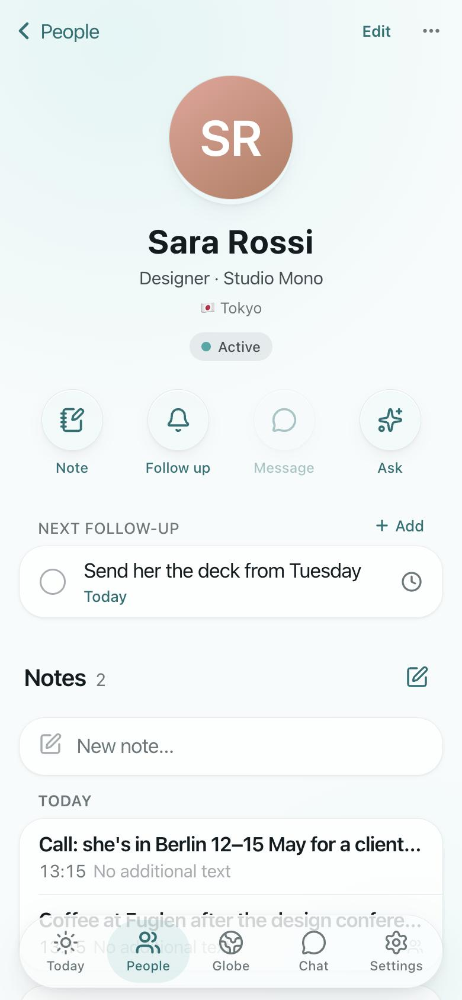
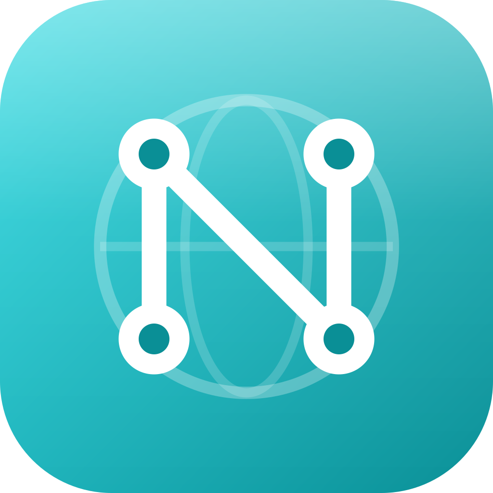
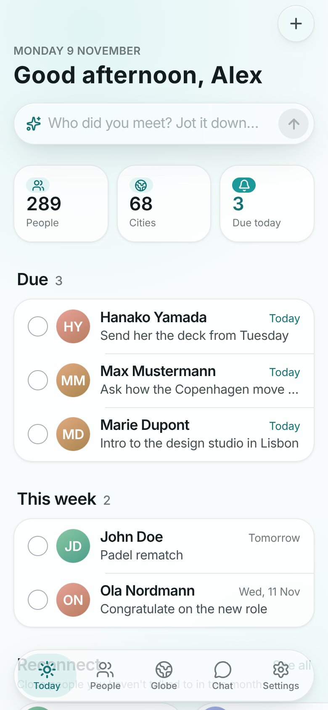
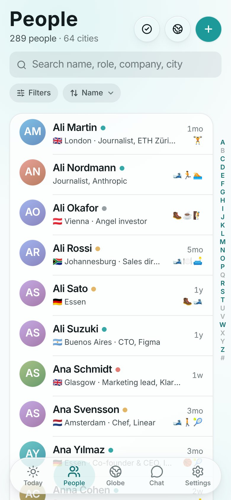
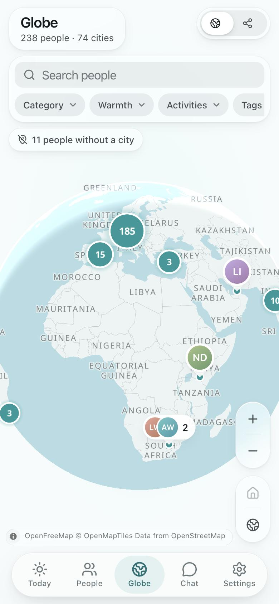

A card for everyone.
Notes in a calm, Apple Notes-style editor, plus how you met, who introduced you, where they live and what you do together.


The Network GitHubOpen source and self-hosted
One card per person: your notes, how you met, and a follow-up that reminds you when it’s time to reach out again.
A 30-second tour. The people in it are made up.
You meet someone at a conference, over coffee, on a trip. Three months later you remember the face, but not what they’re working on, who introduced you, or that you promised to send them something. The Network is where all of that goes.
Notes in a calm, Apple Notes-style editor, plus how you met, who introduced you, where they live and what you do together.

Tomorrow, in two weeks, in three months. Today shows what’s due and who you haven’t talked to in a while, and a daily e-mail lets you mark it done or snooze it in one tap.

Instant search that doesn’t care about accents. Filter by category, warmth, activity, tag or city. Remove someone and they wait in Recently deleted, so nothing is ever lost.

See who you know in a city before you land there, and a graph of who introduced whom.

“Who do I know in Lisbon who climbs?” An AI assistant over everything you’ve written, on your own Anthropic or OpenRouter key.
A built-in MCP server lets Claude, ChatGPT, Cursor or any MCP client read your network and, if you allow it, add to it.
Paste a note, an e-mail or a call transcript and the AI files it under the right people. Years of Apple Notes can come in bulk.
Install it on iPhone and Mac. It opens instantly, works offline and syncs when you’re back online.
You host it yourself, with your notes in your own database. It has exactly one owner and no sign-up page.
AI is optional. If you turn it on, what it reads goes to the provider whose key you added.
You need Node 22, pnpm, Docker and the Supabase CLI. When you’re ready for your own URL, it deploys to Supabase and Vercel.
git clone https://github.com/uraruguy/the-network.git
cd the-network
pnpm install
supabase start
pnpm bootstrap
pnpm db:seed-cities
pnpm dev